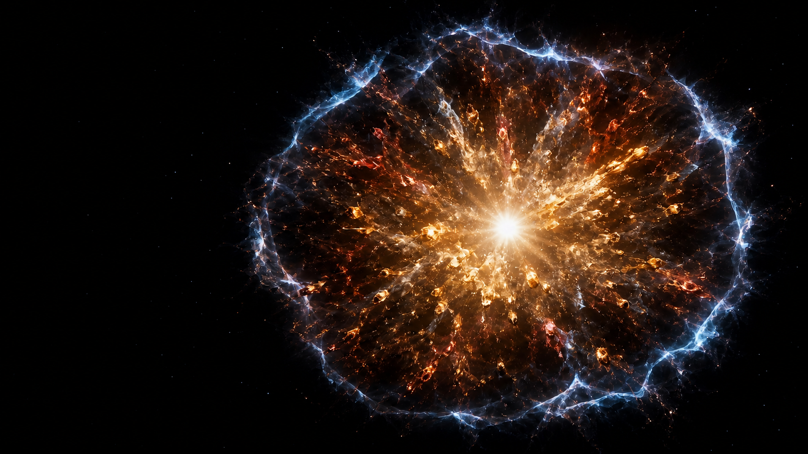

TSINGHUA ASTROPHYSICS · POLARIMETRY
来自恒星内部的光子，
携带爆炸的形状。
我们从微弱的偏振信号中测量超新星不可直接分辨的几何，追踪激波如何冲出恒星、抛射物如何展开，以及爆发前的物质如何塑造观测。
POLARIZATION FIELD
青色箭头表示偏振电矢量：从中心至外缘稀疏分布，方向沿局部轮廓切向，垂直于径向。
Q / U
OBSERVE · MEASURE · MODEL
01Ia 型超新星
热核爆炸几何
02早期激波
捕捉突破形状
03相互作用超新星
追踪几何演化
WHY POLARIZATION / 为什么是偏振
望远镜只看见一个光点。
偏振让我们读出它的方向。
当一个球对称的电子散射光球被投影到天空时，不同方向的电矢量彼此抵消；一旦抛射物、元素分布或外部环境偏离球对称，抵消便不再完整，净偏振由此成为爆炸几何的探针。
电矢量 ⟂ 径向
RESEARCH / 研究方向
把爆炸的几何，
变成可测量的物理。
团队连接观测、数据分析与理论计算，覆盖超新星从激波突破到晚期星周相互作用的完整演化。阅读详细科普 ↗
01THERMONUCLEAR
谱线峰值追踪元素分布；低连续谱约束整体形状
Ia 型超新星偏振
用连续谱与谱线偏振约束白矮星热核爆炸的整体非球对称性、元素分布和观测视角。
TYPE IA SUPERNOVAE · 深入了解 ↗
02SHOCK BREAKOUT
小时尺度保留最初几何；快速响应决定能否捕捉
早期激波突破
在爆发后数小时至数天内快速响应，在星周相互作用重塑外层之前测量第一缕光携带的几何。
RAPID RESPONSE · 深入了解 ↗
03INTERACTION
轨迹方向、主轴与环结构编码三维形态及其演化
相互作用超新星几何演化
连接多历元偏振、光谱与三维辐射转移，追踪抛射物撞击非球对称星周物质时的形态演化。
GEOMETRIC EVOLUTION · 深入了解 ↗
FEATURED WORK · 2025
SN 2024ggi / SCIENCE ADVANCES
爆发约 1.2 天后，
看见贯穿恒星爆炸的对称轴。
团队取得了极早期光谱偏振观测。测量显示，激波突破与随后显现的富氢包层共享清晰的轴对称结构，为理解大质量恒星爆炸机制提供直接的几何约束。
PEOPLE / 团队成员
共同追踪
稍纵即逝的宇宙。
团队立足清华大学物理系，在观测与理论之间协作，围绕超新星偏振、时域天文与爆发几何开展研究。
PI / 01
PRINCIPAL INVESTIGATOR · 团队负责人
杨轶 Yi Yang
清华大学物理系助理教授
观测天文学家，通过偏振光研究超新星及其他宇宙爆发现象的几何、早期演化与宇宙尘埃。
POSTDOCTORAL / 博士后
XW
文旭东 Xudong Wen
三维偏振辐射转移 · 爆炸非对称性与星周相互作用
戚森宇 Senyu Qi
时域光谱巡天 · 致密双星与短周期变星
STUDENTS / 学生
MS04
TR05
LL06
ZZ07
PUBLICATIONS / 论文
近期与代表性工作
团队成员的完整论文列表可在 NASA ADS ↗ 查看。
- 2026
APJL · ACCEPTED
Pinning Down the Geometry of the Type Ic Broad-Line Supernova 2026gzf
Xudong Wen, Yi Yang, Jing Lu, et al.
- 2025
SCIENCE ADVANCES
An axisymmetric shock breakout indicated by prompt polarized emission from the type II supernova 2024ggi
Yi Yang, Xudong Wen, Lifan Wang, et al.
- 2025
ARXIV PREPRINT
Spectropolarimetric Evolution of SN 2023ixf: an Asymmetric Explosion in a Confined Aspherical Circumstellar Medium
Sergiy S. Vasylyev, Luc Dessart, Yi Yang, et al.
- 2023
THE ASTROPHYSICAL JOURNAL
Polarization Signature of Companion-Fed Supernovae Arising from BH–NS/BH Progenitor Systems
Xudong Wen, He Gao, Shunke Ai, et al.
- 2023
THE ASTROPHYSICAL JOURNAL LETTERS
Early-time Spectropolarimetry of the Aspherical Type II Supernova SN 2023ixf
Sergiy S. Vasylyev, Yi Yang, Alexei V. Filippenko, et al.
- 2023
MONTHLY NOTICES OF THE RAS
Spectropolarimetry of the Type IIP supernova 2021yja: an unusually high continuum polarization
Sergiy S. Vasylyev, Yi Yang, Kishore C. Patra, et al.
- 2023
MONTHLY NOTICES OF THE RAS
The Core Normal Type Ia Supernova 2019np: An Overall Spherical Explosion with an Aspherical Surface Layer and an Aspherical ⁵⁶Ni Core
Peter Hoeflich, Yi Yang, Dietrich Baade, et al.
- 2023
MONTHLY NOTICES OF THE RAS
The Interaction of Supernova 2018evt with a Substantial Amount of Circumstellar Matter
Yi Yang, Dietrich Baade, Peter Hoeflich, et al.
- 2022
THE ASTROPHYSICAL JOURNAL
Spectropolarimetry of the Thermonuclear Supernova 2021rhu: High Calcium Polarization 79 Days After Peak
Yi Yang, Huirong Yan, Lifan Wang, et al.
- 2021
MONTHLY NOTICES OF THE RAS
Spectropolarimetry of the Type Ia SN 2019ein rules out significant global asphericity of the ejecta
Kishore C. Patra, Yi Yang, Thomas G. Brink, et al.
- 2020
THE ASTROPHYSICAL JOURNAL
The Young and Nearby Normal Type Ia Supernova 2018gv: UV–Optical Observations and the Earliest Spectropolarimetry
Yi Yang, Peter A. Hoeflich, Dietrich Baade, et al.
- 2018
THE ASTROPHYSICAL JOURNAL
Mapping Circumstellar Matter with Polarized Light: The Case of Supernova 2014J in M82
Yi Yang, Lifan Wang, Dietrich Baade, et al.
OPEN RESEARCH / 每日更新
ArXiv Astrophysics
浏览天体物理学最新预印本，涵盖高能天体物理、太阳与恒星、星系、宇宙学、仪器方法等方向。
进入 ArXiv 天文专栏 ↗